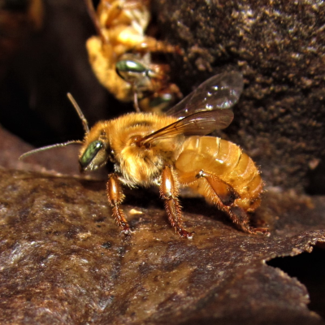
Tendo o mel mais saboroso entre as abelhas dessa família a Uruçu-amarela é uma abelha de porte médio, suas colmeias não pasam de 4 a 6 mil habitantes
Uruçu-Amarela
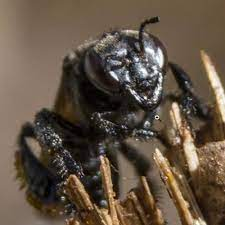
Abelhas grandes de temperamento díficil essas são as tubunas, sendo a maior da família, essas abelhas não são recomendadas para iniciantes
Tubuna
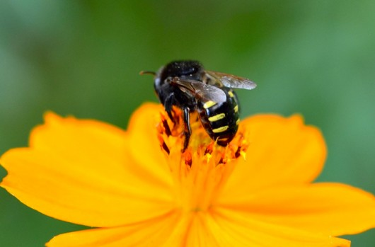
Tendo um mel não enjoativo a mandaçaia é uma das espécies mais dóceis só atacando se extremamentes provocadas, suas colônias são as menores tendo normalmente centenas de habitantes
Mandaçaia
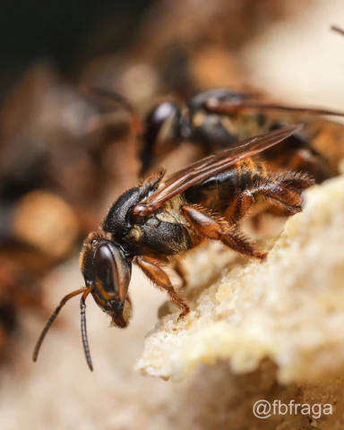
As mandaguaris, são famosas por serem defensoras ferozes de seus ninhos, sendo que mesmo com a ausência de ferrão se é recomendado utilizar roupas de proteção em seu manuseio
Mandaguari-Amarela
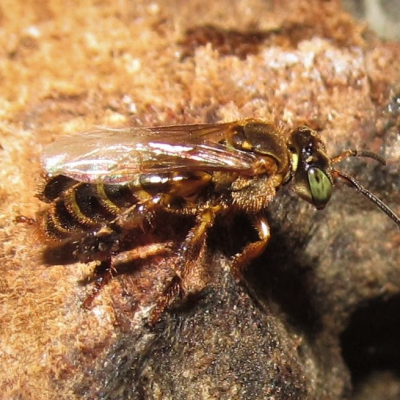
Borás são abelhas extremamente reativas ao calor ficando mais agressivas nas horas mais quentes do dia.
Borá
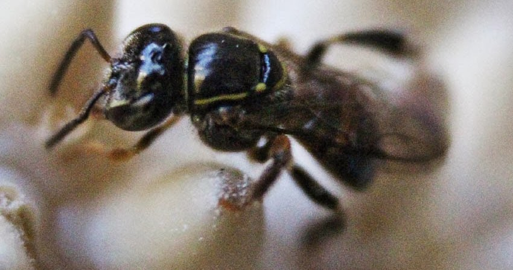
Mirim é a menor das abelhas sem ferrão, sendo extremamente dócil com outros seres
Mirim
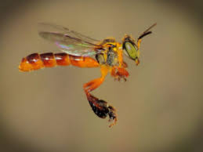
As abelhas de mais fácil criação conseguem construir ninhos e se adaptar as mais diferentes situações, não são muito exigentes (o frio ainda as afeta de forma parecida a outras abelhas)
Jataí
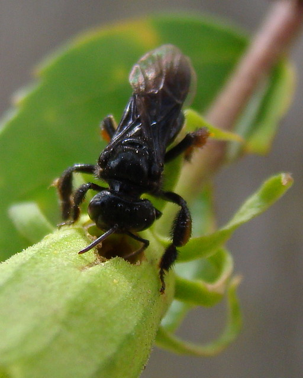
Arápuas são as abelhas de mais díficil criação principalmente se você quer criar com outras espécies elas destroem flores e plantas baixas para construção de seus ninhos e são muito agressivas com outros seres especialmente outras espécies de abelha sem ferrão
Arapuá
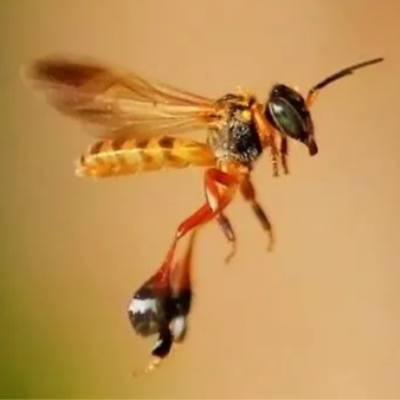
Essas abelhas tem o costume de roubar polém de outras espécies, também demonstram extrema agressividade com outras abelhas sem ferrão, tem uma predileção por madeira de jatobá para criar seus ninhos
Marmelada
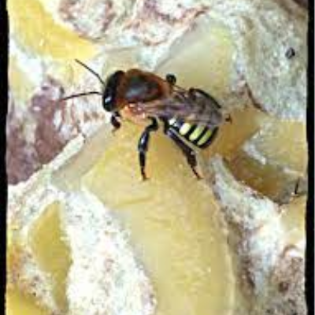
São abelhas extremamente eficientes produzindo o máximo de mel com o mínimo de néctar, isso se deve a seus ninhos apertados com poucas reservas de mel o que as obrigou ser criativas nesse âmbito
Manduri-Amarela
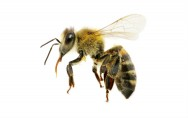
Abelhas extremamente sensíveis e dependentes do ambientes que a cercam as guaraípos costumam a ser utilizadas como bioindicadores da qualidade do ambiente, já que sua presença demonstra um local saúdavel e límpido
Guaraípo